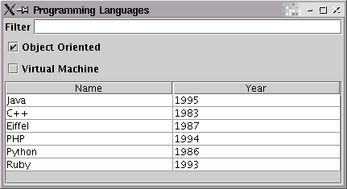

Glazed Lists Tutorial
Part 3 - Custom Filtering
Although text filters are fantastic, they don't solve all of our problems. Glazed Lists
makes it easy to create custom filters that work with your data. The right filter
will make your application easier to use and prevent user errors.
For our tutorial, we're going to implement a pair of checkboxes for our
ProgrammingLanguage. We will allow users to optionally show only programming languages that are
object-oriented or use a virtual machine. First, we'll need to ensure that the filter
data exists in our source object. We'll add a few methods to ProgrammingLanguage
for this.
public boolean isObjectOriented() {
return objectOriented;
}
public boolean isVirtualMachine() {
return virtualMachine;
}
|
Extending AbstractFilterList
To create our custom filter we simply extend AbstractFilterList. There is one method
which we need to create, boolean filterMatches(Object element), to test
if a given object in the set matches the current filter. Another noteworthy method
of AbstractFilterList is handleFilterChanged(), which
should be called whenever the filtering critera changes. In our case, this will be
whenever a user changes the value of a checkbox.
import com.odellengineeringltd.glazedlists.*;
import java.awt.event.*;
import javax.swing.*;
class ProgrammingLanguageFilter extends AbstractFilterList implements ItemListener {
JCheckBox objectOrientedCheck;
JCheckBox virtualMachineCheck;
public ProgrammingLanguageFilter(EventList source) {
super(source);
objectOrientedCheck = new JCheckBox("Object Oriented");
objectOrientedCheck.addItemListener(this);
virtualMachineCheck = new JCheckBox("Virtual Machine");
virtualMachineCheck.addItemListener(this);
handleFilterChanged();
}
public boolean filterMatches(Object element) {
ProgrammingLanguage language = (ProgrammingLanguage)element;
if(objectOrientedCheck.isSelected() && !language.isObjectOriented()) return false;
if(virtualMachineCheck.isSelected() && !language.isVirtualMachine()) return false;
return true;
}
public void itemStateChanged(ItemEvent e) {
handleFilterChanged();
}
public JCheckBox getObjectOrientedCheckBox() {
return objectOrientedCheck;
}
public JCheckBox getVirtualMachineCheckBox() {
return virtualMachineCheck;
}
}
|
There are a few important notes when extending AbstractFilterList:
super(EventList) is the only way to instantiate the
AbstractFilterList. The parameter is the source list to be filtered.
handleFilterChanged() must be called at the end of the constructor.
handleFilterChanged() should be called whenever the filter criteria changes.
Finally we must add the filter to our list chain and add the checkboxes to our Frame.
import com.odellengineeringltd.glazedlists.*;
import com.odellengineeringltd.glazedlists.jtable.*;
import javax.swing.*;
import java.awt.*;
public class ProgrammingLanguageBrowser {
BasicEventList languages;
CaseInsensitiveFilterList filteredLanguages;
ProgrammingLanguageFilter customFilteredLanguages;
public ProgrammingLanguageBrowser() {
languages = new BasicEventList();
languages.add(new ProgrammingLanguage("Java", "1995", "Object-oriented virtual machine language by Sun Microsystems", true, true));
languages.add(new ProgrammingLanguage("C", "1973", "The UNIX language originally developed for the PDP-11", false, false));
...
languages.add(new ProgrammingLanguage("Visual Basic", "1992", "QuickBasic with a visual UI designer", false, false));
filteredLanguages = new CaseInsensitiveFilterList(languages);
customFilteredLanguages = new ProgrammingLanguageFilter(filteredLanguages);
}
public void display() {
...
frame.getContentPane().add(customFilteredLanguages.getObjectOrientedCheckBox(), new GridBagConstraints(...));
frame.getContentPane().add(customFilteredLanguages.getVirtualMachineCheckBox(), new GridBagConstraints(...));
...
}
|

As the user checks and unchecks the checkboxes, programming languages are displayed
or hidden. Custom filters can be very powerful and could be used to limit items by
date, magnitude, owner or even a regular expression.